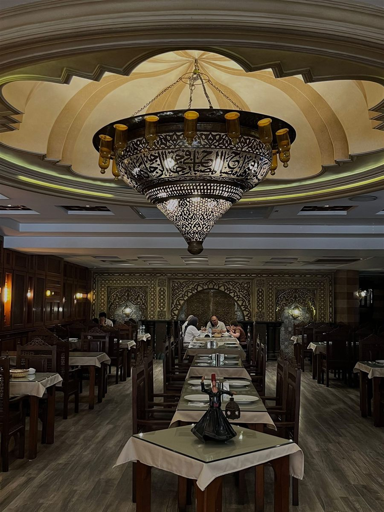
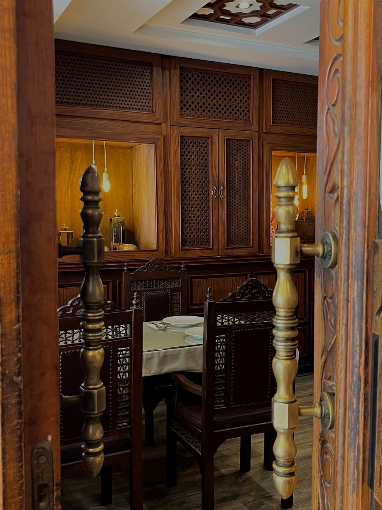
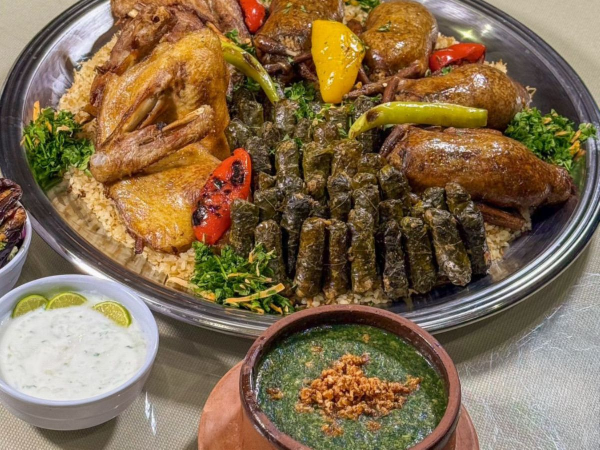
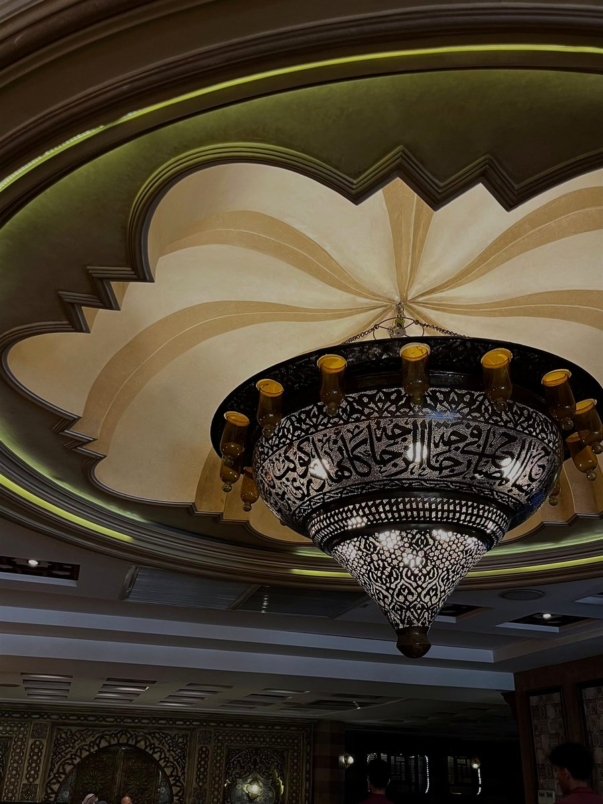
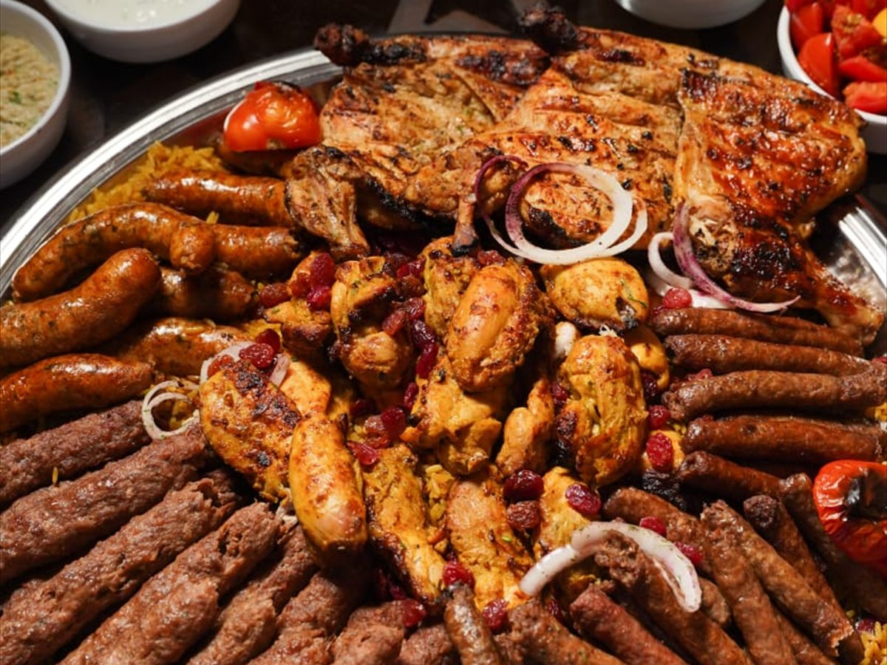
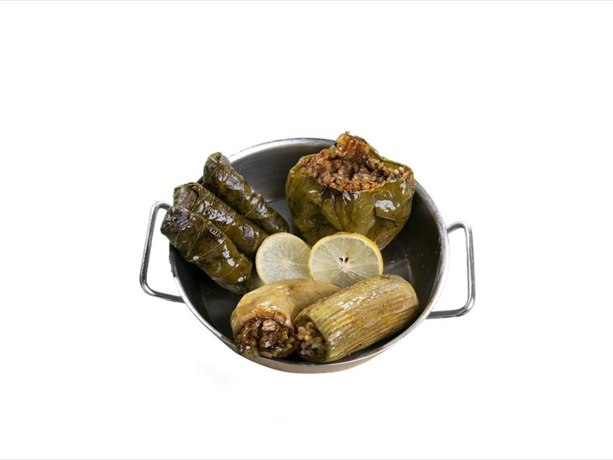

من قلب مدينة نصر
أصل الطعم
أصل الطعم
المصري
طواجن على نار هادية، مشاوي على الفحم، وصواني تلمّ العيلة. أكل بيتي طازة يتطبخ كل يوم على أصوله.
٣٦ طبق مصوّر
٨٨ اختيار في المنيو
يومياً من ٢ لـ١٢


المكان قبل ما تيجي
أجواء شرقية
أجواء شرقية
تلمّ العيلة
مشربيات وأرابيسك وتفاصيل دافية. تعالى اتغدى عادي أي يوم، والصالة بتستوعب عزومات العيلة والمناسبات بالحجز المسبق.
من ٢٠١٨في مدينة نصر
كل يوم٢ ظهراً — ١٢ ليلاً
٢٠٠ فردسعة الصالة
اسأل عن الحجز
من الحضرة
الأكل والمكان في لقطة




جاهز تختار؟
اطلب أو احجز دلوقتي
ابعتلنا عدد الأفراد ونرشّحلك طلب مناسب، أو اسأل عن الحجز للمناسبات والكاترينج.
افتح واتساب- المواعيديومياً من ٢ الضهر لـ١٢ بالليل
- العنوانشارع الإمداد والتموين، أمام بوابة فندق الإنتركونتيننتال سيتي ستارز — مدينة نصر
- التليفون0103 008 0098
- الدفعكاش فقط عند الاستلام
- التوصيل57 منطقة · من 40 لـ100 ج · أقل أوردر 300 ج
بنوصل لحد عندك
مناطق التوصيل
- أقل أوردر300 ج
- مدة التوصيلمن 60 لـ70 دقيقة حسب ضغط الطلبات
- 40 جدار الاشارة · دار المدفعية · سيتي ستارز · عمارات السعودية · عمارات رامو · عمارات الفرسان · نادي الفروسية · السبع عمارات · تيفولي دووم · احمد فخري · مكرم عبيد · عباس العقاد
- 50 جالميرغني · عمر ابن الخطاب · مستشفى الطيران · ميدان تريومف · سانت فاتيما · عمار بن ياسر · ميدان الحجاز · ميدان سفير · ميدان المحكمة · ميدان صلاح الدين · ميدان الاسماعيلية · الطيران · حسن المأمون · مساكن شيراتون · حسن الشريف · مصطفى النحاس · سمير عبدالرؤف · الحديقة الدولية · الحي السابع · حي السفارات · الحي الثامن · التبة · احمد الزمر
- 60 جالكوربة · ميدان روكسي · الخليفة المأمون · عمارات العبور · عبد الحميد بدوي · الشيراتون · الحي العاشر · حي الواحة · زهراء مدينة نصر
- 65 جمنشية البكري
- 70 جحدائق القبة · النزهة الجديدة
- 75 ججاردينيا · تاج سلطان · العباسية
- 80 جحلمية الزيتون · جسر السويس
- 90 جالمطرية
- 100 جالتجمع الأول · التجمع الثالث · التجمع الخامس · الرحاب
الرسوم بالجنيه المصري وبتتحسب على المنطقة. منطقتك مش في القايمة؟ اسألنا على واتساب ونقولك.